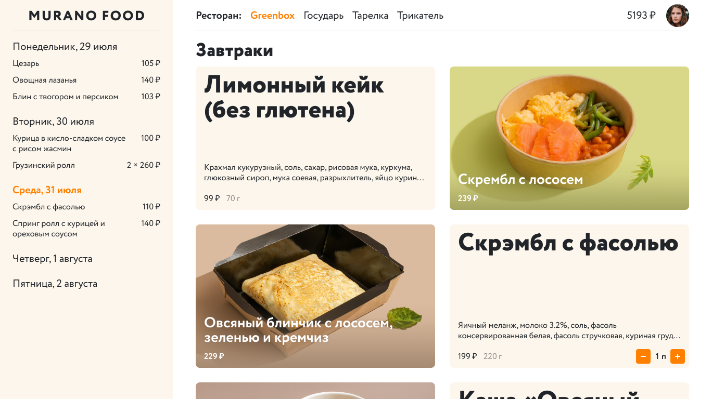
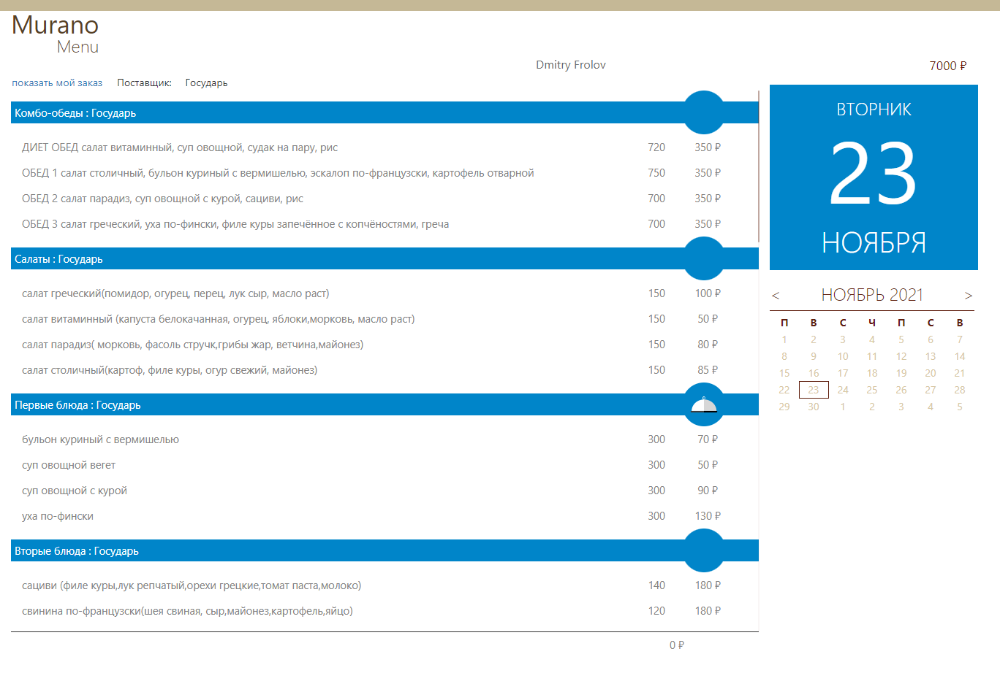
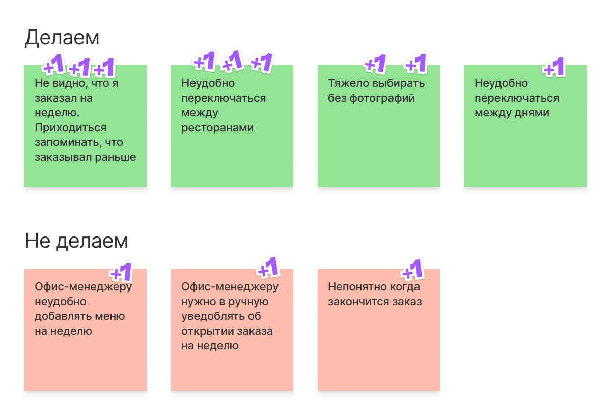

Dmitry Frolov / Murano Food
У Мурано есть доставка обедов в офис. Каждый месяц сотрудникам
начисляются деньги, а по понедельникам они заказывают еду на всю
неделю. Заказ делается на специальном сайте.
У Мурано есть доставка обедов в офис. Каждый месяц сотрудникам
начисляются деньги, а по понедельникам они заказывают еду на всю
неделю. Заказ делается на специальном сайте.

Старый сайт плохо работал, был неудобный и не ассоциировался с
едой.

Я провел интервью с пользователями, выписал и приоритизировал
проблемы.
